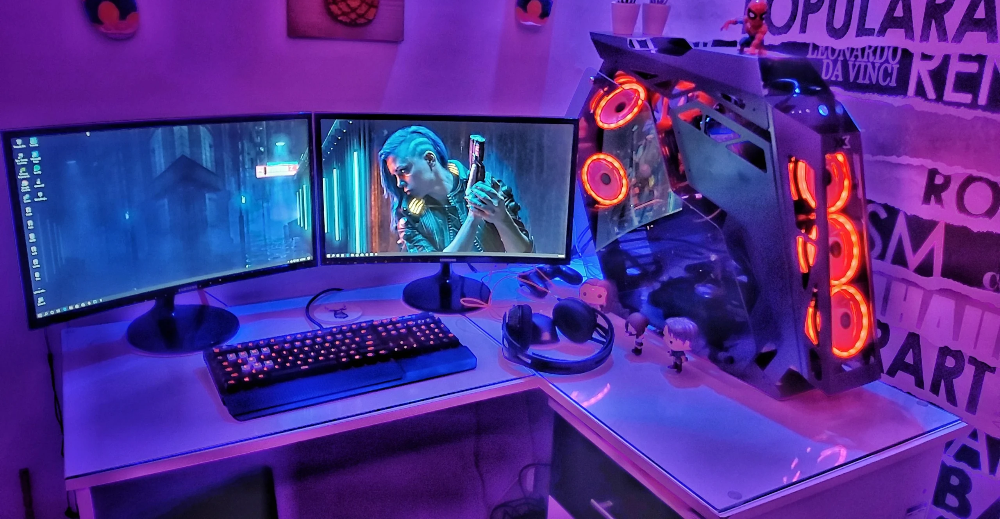

Seu Setup antes da ReparaBit
Seu Setup depois da ReparaBit
Somos a Reparabit, uma empresa pequena, formada por duas pessoas apaixonadas por tecnologia e qualidade. Trabalhamos com dedicação para oferecer os melhores serviços em montagem, limpeza e manutenção de PCs — sempre com atenção aos detalhes, preço justo e atendimento de confiança. Aqui, cada computador é tratado como se fosse nosso, porque acreditamos que um bom serviço começa com cuidado e termina com resultado.
Serviços oferecidos pela ReparaBit
Conserto de Notebook
Na ReparaBit, seu notebook está em boas mãos. Fazemos reparos rápidos, com diagnóstico preciso e peças de qualidade. Problemas com tela, lentidão ou falhas no sistema?A gente resolve.
Conserto de Computador
Seu PC está lento, travando ou não liga? A ReparaBit resolve! Fazemos consertos com agilidade, peças confiáveis e atenção aos detalhes. Do hardware ao software, cuidamos de tudo pra você.
Limpeza de Notebook e Computador
Poeira e sujeira podem causar superaquecimento e lentidão. Na ReparaBit, fazemos a limpeza completa do seu equipamento, garantindo mais desempenho, durabilidade e segurança. Seu Computador ou Notebook como novo, por dentro e por fora
Montagem de Computador
Quer um PC sob medida? A ReparaBit monta sua máquina do jeito que você precisa. Seja para games, trabalho ou estudos. Montagem profissional, com os melhores componentes e o desempenho que você merece.
Upgrade de peças
Seu computador merece mais desempenho. Na ReparaBit, fazemos upgrade de memória, SSD, placa de vídeo e muito mais. Avaliamos seu equipamento e indicamos as melhores opções para deixar tudo mais rápido e eficiente.